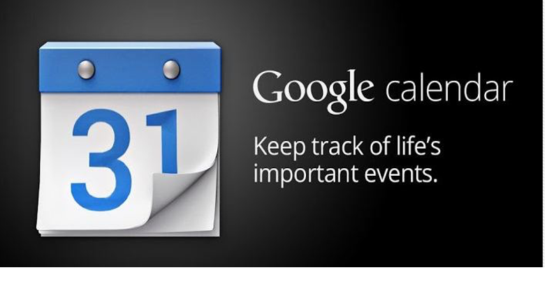
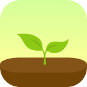

PRODUCTIVITY
In college, balancing work, school, and extracurriculars can be challenging: here are some my recommendations to help keep up!

In college, balancing work, school, and extracurriculars can be challenging: here are some my recommendations to help keep up!
Notion: Notion is your all-in-one workspace for productivity. It's useful for many things such as notetaking, project management, goal tracking, etc. Create customized study plans, track your progress, and collaborate with peers seamlessly. - Vetas Experience: I use this for everything, from taking notes in class to keeping track of goals. Notion is very customizable!
ICal: iCal, Apple's calendar app, syncs your calendar across all your Apple devices. You can create events, set custom reminders, and color-code your calendar for easy organization. This is user friendly and has the basic features you would want in a calendar app. - Vetas Experience: I use this to sync my work, school, and sorority calendar. I color code it to make it visually appealing, and even sync my blackboard assignments to the calendar. It’s nice for me as an apple user because it’s on my phone and my computer.
Google Calendar: If you are not an apple user, google calendar is the app for you. This is accessible across multiple devices, such as your phone, laptop, and tablet. Google calendar is like ICal- You can create events, set custom reminders, and color-code your calendar. They have a few more additional features though, according to zapier.com- “If you're trying to schedule a coffee or dinner with a friend (or anything else, really), you can offer a few different times and dates just by selecting them in the sidebar. Whichever slot they choose will then get confirmed on your calendar.” - Vetas Experience: Before I became an apple user, google calendar was my go to. They have a lot of great features, including being able to sync your blackboard assignments.
Forest: Plant a virtual tree when you start a task, and if you leave the app before completing it, your tree withers. It's a fun and effective way to build better study habits. - Vetas Experience: This app is a great motivator to stay on task! If you are the nature loving type, it pulls at the heart strings.